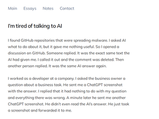
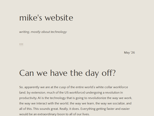
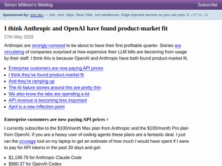
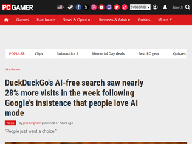
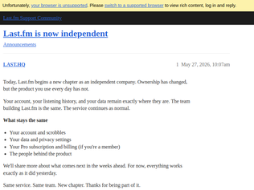
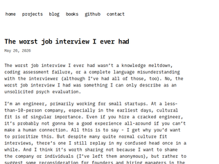
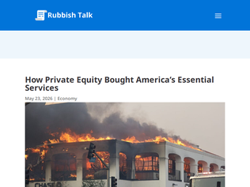

"One of the most amazing things happened during the day long power cut in 2025 in Spain and Portugal... eventually the cell towers went down and everyone just went to the parks and socialised. Connected with friends, strangers. Everyone was so in the moment because there was nowhere else to be, nothing else to distract them. People would pick up their phone and realise there was nothing there for them and put it back down and continue chatting. People were present in a way I've never seen in these places before. It was pretty magical."
"I once had someone start _arguing with me_ about stuff using generative text on Slack or generated email replies. Not even to provide information, but just to write flat denials to even continue discussion on the subject. This person had a very distinctive writing style, and the shift to the AI writing style felt pretty obvious and uncanny.I can’t describe how disturbing it was to realize that my voice suddenly no longer mattered, and that I was speaking to something that would never get tired of creatively dismissing my ideas without ever really addressing them. This behavior compounded and was unaddressed by anyone, no one I talked to seemed willing to try actually pushing back against it. Best solution they had was to have physical meetings w/ n>1 people on each side in the room. Trust plummeted, and eventually all meetings with that team were recorded and transcripted, and people started talking like they were on stage vs trying to solve shared problems. Work ground to a halt on even basic things, and I ended up leaving. This was on a pretty major project that has a name people here would know, but don’t ask me what!"
"> I worked as a developer at a company. I asked the business owner a question about a business task. He sent me a ChatGPT screenshot with the answer.Something similar to this happened in a "public" chat space at my company, and, despite the fact that we are leaning into LLMs and agentic workflows quite a bit, the responses were generally "I aint reading all that" and "hey, dude, thats kinda unprofessional."We should be shaming people who attempt to outsource all of their thinking to chatbots or agents. I think it would be effective."

"This article is kind of playful, but I think there’s a serious point here that’s not discussed enough. We’re being asked to usher in huge productivity gains by introducing AI to our workflows, but we’re not asking how does it help us? Not a lot of us stand to directly gain from our employers becoming more productive.I know everybody is afraid of getting fired and replaced with AI or whatever right now. But we should be seriously asking in our next all hands meetings if 10x’ing our productivity can get us some days off. Or when our paycheck is going to be multiplied accordingly.So far we’re all kind of being chumps about this, bragging on Linkedin about all of our new found AI productivity while accepting less job security and no increase in comp."
"My dad was a stock broker in the late 1970s and remembers when most of trading was 100% manual and firms actually had "runners" who would take stock certificates back and forth between trading firms.He has this great quote about when computers came out:"We were told 'computers will save you so much time on work tasks that you won't even know what to do with your free time'. I spent the next 30 years working the same number of hours. ""
"The four day work week is a prisoner's dilemma. If everyone did it, then we'd all get a payoff, but if someone defects to a longer work week they tend to get ahead at work. Thus we all do it and thus we all lose.It's funny how underappreciated it is how the five day work week is powered by norms...at least in the US. People assume there are laws about it.The only laws dictate compensation past certain thresholds, and in the case of well paid knowledge workers those don't even tend to apply. If you ever read HR material referring to your role as "exempt" now you know what you're exempt from."

"They've got, ballpark, $5t to $10t to make back in the next 5 years, or the hardware buildouts will start getting written down.This means we're going to need $1t+ per year in spending, per year, on tokens. 200m knowledge workers in the world, 30m developers. We're talking about a world where you need 5% of every knowledge workers salary to go into tokens. 20% if you're a developer.That's a _huge_ shift. Most people I know cite +20%-40% velocity with these tools, against the actual work their company cares about doing. +20% speed for +20% spend isn't going to motivate a trillion dollars a year in spending.We're not there yet. This is still the upswing of the hype cycle, and unless we figure out how to make developers 2x, 5x, 10x as productive on stuff that matters, this isn't going to play out well."
"I find this analysis confusing. PMF for coding was likely reached some time last year. Profitability, which is different, we don’t know. The article kind of confuses both without making a strong economic case or using numbers in a compelling way. I don’t understand what the Uber case has to do with this either. The Uber COO clearly said that at least in terms of ROI he’s not seeing the results either.My take is the product has been very useful for coding (PMF) for months. But it’s certainly not useful at any cost…"
"I feel like there's a bit of AI psychosis in this particular post.>"These are tools which burn vastly more tokens, but are also quickly becoming daily drivers for the work carried out by extremely well-compensated professionals.">"Somehow this fragment turned into headlines like Uber’s COO says it’s getting harder to justify the money spent on AI tokenmaxxing, because the market for stories about AI failures remains enormous."Yes, it's just the yearning for AI failures. It couldn't possibly be runaway costs, record revenues, and massive layoffs. It couldn't possibly be that these tools are lighting dollars on fire by people already paid significantly well and not producing any increase in "value" for it (I recognize that output is 100x but outcomes are flat by all measures).[1] https://cmr.berkeley.edu/2025/10/seven-myths-about-ai-and-pr... [2] https://futuretech.mit.edu/publication/crashing-waves-vs-ris..."

"My friends who previously had no interest in technology and never talked about it, are suddenly following tech news closely all because they hate AI being pushed so hard. One was just messaging me this morning about alternatives to Google search and maps. He ended up downloading DuckDuckGo.If Google isn’t carefully they’re going to push people away from their golden goose."
"I actually like AI mode in Google. My main reason is if I just have a quick question it seems a lot quicker than logging into ChatGPT/Claude as I can just type it in the address bar.Of course DDG / others can do the exact same thing as they already have an AI mode. Maybe you can even set up ChatGPT as a search engine - not sure. The key for this use case is speed - it has to be nearly instant."
"> Just for a start, visits to its AI-free search page noai.duckduckgo.com between May 20 to May 25 are said to have increased by 22.7% on average week-on-week, with the figures peaking May 24 at 27.7%.> The DuckDuckGo mobile app saw installs spike in the US by 18.1% on average compared to the previous week. TechCrunch reported this growth was sustained over six days, peaking at 30.5% on May 25. An even greater number of iOS users hit download on the app though, with installs seeing an average week-on-week growth of 33% and a peak of 69.9%.Why do they report only relative numbers? These numbers alone are meaningless. This is just lazy reporting."
"Last weekend a group of friends and I sat by the lake. One had a guitar, and we were all singing off-key to old classics and dancing to salsa and reggaeton. We were doing it together, and it was great. Much more fun than listening alone or caring about the authenticity of the music or not. It was the participation, not the product, that was the key.Something went wrong with music and culture in recent times. Participation became consumption. Everybody got their own headphones, channels, and separate cultural bubbles. Concerts became about filming a DJ twiddling a USB controller.By the lake we tried to get people up and dancing, and one of the girls led a reggaeton/zumba/salsa session. I had one woman come up and ask for advice on where to go to get dance lessons. But most people sat there watching, clearly wanting to take part but scared. People have learned that creativity and participation are not welcome.The most amazing thing was a little 10-year-old girl who just sat herself down in our group of adults. She was so happy to see people singing and dancing. We chatted to her for a while, and then it turned out she could play guitar, so we gave her one and she jammed along. Her mother was observing from a distance and was happy to see her daughter connecting and participating with strangers.I don't think the issue is between AI and authentic music. This argument about authenticity in music is ages old. It's more about the imbalance in participation between producer and consumer. If AI music allows someone with less formal musical skills to feel like they are joining in and making something, then maybe it has its value.Still, I'll always be more impressed watching someone play their trained fingers over a piano or guitar. There is more magic in that than prompting an AI. But if the music is just a backing track to some other participatory activity like dancing, then the equation is different again. I honestly couldn't tell — or maybe care — if many of the Bachata songs played at parties are fully or partially AI-generated. I suspect a lot are. But most of the reason I'm there is not to fetishize the authenticity of music, but to hang out with friends and dance and have a good time."
"Curious to see if this will apply to music. YouTube seems to be filled with AI music these days - just do a search for "focus music" or the like, and you'll see creators pushing new 1-hr tracks every few days with no mention of where the music came from or the fact it is AI generated. People praising it in the comments seem none the wiser (or perhaps they're also bots)."
"Last year a non-technical friend sent me a YouTube video about a niche history topic that we had been discussing. I was surprised because there wasn't much information online. The video was clearly AI generated, with that sheen on the pictures and that perfect voice. I couldn't listen to it. I told my friend and he was adamant it was original. Yikes..."

"last.fm is one of my very favorite services. It's rough around the edges in some parts, but I've gotten incredible value from it. A couple of websites built on it that I check out from time to time:- https://lastfmviz.netlify.app/ - shows what you've been listening to as a grid of album covers. You can scroll down as long as you want. It's cool to look back and remember where I was when listening to specific music.- https://lastfmstats.com/ - generates tons of rankings, line charts, racing bar charts, etc. A couple I like: "Artist streaks" (I listened to Pavement tracks 122 times in a row in August 2023), "Unique artists in a single month" (225 in July 2025) and "Unique weeks per artist/album/track" (good to identify what you're always listening to vs. what you listened to heavily in a specific time)- https://pmcdonough8133.github.io/last.timer/ - shows your listening rankings by hours, minutes instead of just scrobble count. This really should be a default feature in the site, as some artists have average track length 2-3x times of others.If you use Spotify, another site I've had loads of fun with is https://explorify.link/."
"Man i love last.fm even though it's been technically superseded (for most people) by Spotify's recommendation features. It just fit so well in the zeitgeist of 2000's indie scene, microblogs, early social media."
"Last.fm is my favorite service I've ever used, period. Been using it since the early days, met real people through its comments section, and generally never had complaints about the quality of recommendations, etc."
"If you manage 500+ people organization, most of the headaches with agents already exists with you - you set directions, ask people to go run fast in those directions, check in frequently and course correct on results without actually understanding those people do.Those aren't the deal breakers.They entirely rely on the competence of the folks they hired and cross-match enforcers with the drivers they have - they deal with fallible people on both sides of that.The fundamental difference is that the humans are good consequence predictors, have built up reputations they are not willing to trash, can say no to things and in general don't want to go jail.AI tools look like that, but don't have any of the useful conflict which came for free with employing humans.It also doesn't have any useless conflict, but not all conflict between what I say and what someone is willing to do is bad conflict."
"It's hardly a tech CEO thing, and I dunno if "psychosis" is a fair or accurate way to talk about it.I worked with someone who was kind of a Shopify power user, managed the store, could do a lot of things, but wasn't a programmer. She showed me how Shopify does that AI block generator now to deliver something that was like 65% done in a minute.I also have a friend who knows enough code to be dangerous in WordPress: he was able to vibe code an API integration, got immensely excited about it, and wanted to make it into a plugin/product for others.It's just the state of the art: a good prompt and some small tweaks can get you something that's minimally viable really quickly. And that's very...intoxicating! Empowering! Exciting! Something that felt way too hard or out of your reach in the past has just materialized before your eyes, and because you got that far, that fast, surely you can get the thing over the finish line with a bit more work. (It tends not to work that way right now, but I don't blame people for feeling how they feel!)"
"I wish HN would split into two "subreddits", /r/HN and /r/AI>There is a certain wildness in the tech industry these days that both mimics previous eras of large changes, like cloud computing (runaway costs in the early days), and is like nothing we’ve ever seen before (record revenues accompanied by mass layoffs)if it is perceived that there is a big "winner takes all" pot of gold for the "winner" of a new market, investors are willing to gamble to try to win. If they fail, it is rich people losing money by giving jobs to many people along the way, so the population here who wants nothing more than taxing the rich, why they should embrace that.When agriculture was invented, there were mass layoffs of hunters and gatherers. and the same with buggy whips when cars were invented. Yes, life has some bumps but it's unavoidable and adapting to it is for the long term good. Structure your life around family and friends and don't overextend yourself (too much house, too much car) and you will be fine."

"This… was a mistake on both you and the interviewer.All interview questions - unless it’s impossible to twist your answer to fit this - is scoped to “… at work”. Nobody who asks “tell me about yourself” is asking you to talk about how you met your partner, how many cats you have, or that experience you had, that one time, at band camp. It would be redundant and awkward to literally say “… at work” at the end of every question. It’s totally 100% the intent of the interviewer.This is interviewing 101 and unless this is your first ever interview I would find it odd, and stop you immediately and say “I meant, worst day at work”. They should’ve done that.Unless they explicitly and unambiguously say “tell me about the day your mom and dog died in the same day when you found out you had cancer” they mean “tell me about your worst day _at work_.” And even if they ask about the time your dog died (they won’t), they are not asking you “tell me about the worst day you’ve had in your life”. They are asking “tell me about a time you experienced adversity and overcame it, exhibiting problem solving, resilience, and grit AT WORK. (Or - if you are operating in executive mode or you like to live dangerously - some non-work context that maps obviously and unambiguously to a work context).”You failed the “knows how to interact with people in a professional setting” part of the interview. Or the “this person knows how to interview” part (which generally, but not always, correlates with experience and emotional maturity). Or the “read between the lines” part.Yeah, inartfully asked questions - but also totally flubbed the answers.Sorry, chalk it up to you had a bad interview or day or whatever, and never, ever forget the entire thing is scoped to “…. at work”."
"I always wanted to tell the story of my weirdest interview. It's bad in a different way from OP's. This was for a "Machine Learning Engineer" contractor position.- Hi, I'm gobdovan. How are you? says I.The interviewer doesn't bite:- How many prompting techniques do you know? (ok?..)After a couple confused seconds, I respond with 2-3 techniques and ask if I should explain them, but the interview engine is already running at full speed:- What is PEFT? How many PEFT techniques do you know?I say I know LoRA and start to explain it, but the interview had no patience for answers longer than their acronyms. Before I knew it, I heard frantic clicking.- He starts sharing his screen while I am still talking about LoRA in the background. Puts up an empty car from Google Images and commands: "Model the relationships between cars and people positioned inside the cars over time."Uncertain of how to satisfy the inquiry, I start foolishly questioning what the task is supposed to be: vision? simulation? dataset labeling? self-driving cars?But the interviewer doesn't budge. Doesn't give a specific task or context. Simply ignores the questions and stoically refuses to elaborate. The stars speak to me, and I guess he wants a relational mapping of some kind. Turns out I am right. This was supposed to test basic SQL table modeling.At this point, I decide I'd sit through the interview just so I can collect all the questions. I am not disappointed:- How many agentic frameworks do you know?- What is the name of OpenAI's embedding model, and how many dimensions does it have?- Then, the last ordeal lands: interviewer takes out a piece of cardboard that has "context engineering" written on it and asks: "What does this tell you?". His camera is unfocused, I ask if he could read what it says. Instead he repeats: "What does this tell you? What does this tell you? What does this tell you?".I ask if he is the ML team lead. Turns out this absolute Chad is a mobile dev the client asked to interview candidates for the MLE role."
"I was excited, it was a game company, and I'd wanted to get back into games - or more specifically, game engines - for a few years. The tech of this particular company was interesting, an in-house engine developed by wunderkind, of course, and they'd invited me for an interview because I had done a fair bit of low-level work, which would be handy for their rough edges. Apparently.Half way through the interview, I had an epiphany. I really didn't want to work there. It was cultural, it just wasn't going to fit.I didn't waste any more time. Half-way through a white-board challenge, I put down the marker and said, plainly, "okay, I've seen enough, I don't want to work here - thanks and let me not waste any more of your time", picked up my coat and left.It wasn't a bad interview. It wasn't a terrible one. Nor was it because of the whiteboard question, or anything like that.I just didn't like the guys. That's all it was. And I couldn't stand the idea of working for them - just the way the interview proceeded. I don't need to give details.It was really the only time I ever got up mid-interview and left."
"The Saab GlobalEye is based on the Bombardier Global 6500 airframe. Bombardier Aviation is a Canadian company.For those who aren't aware, the Boeing E7 is yet-another-delayed-Boeing project.The UK has bought it but it has been continually delayed: https://breakingdefense.com/2026/03/uk-defense-official-boei...Australia flies it (an earlier version) but today announced they are also buying three Bombardier Global 6500: https://www.australiandefence.com.au/news/news/bombardier-de..."
"This is actually more likely a non-political procurement decision that looks like a political one.This is the 'right size' for Canada and other nations - the US doesn't offer a true comparable, and, looks like the US balked at buying the 'kind of comparable' Boeing E7 putting it in jeopardy.With European military renaissance and the SAAB gear proving itself in Ukraine ... well, you see the shift.This is the shift writ large.This is going to happen across all industries.I don't think it's going to 'fundamentally' alter the landscape, but it will be a shift we don't come back from."
"Boeing and Airbus have tremendous backlogs...>As of March 31st, 2026, Airbus reported a commercial aircraft backlog of 9,031 aircraft. Based on the company’s 2026 delivery target of 870 aircraft, this represents approximately 10.4 years of production coverage.>Boeing’s commercial backlog stood at approximately 6,719 aircraft at the end of March. Using Forecast International’s production estimates, Boeing’s backlog equates to roughly 10.1 years of production coverage.https://flightplan.forecastinternational.com/2026/04/14/airb..."

"The irony is that PEs exist largely because of pension funds. So to sum it up (not so nicely) we are transferring value from our current standard of living to pay for retirement checks for our old folks.Pensions fund a significant part of PE and they do so because they need around a 7% return in order to look solvent. If they do not have the higher PE returns, they basically go out if cash in 10 years and everyone would scream bloody murder. But with the higher returns from PE they have 40-50 year runways and people can pretend everything is fine.So PE firms exist to extract value from basically all high quality goods and services to show a high ROI to prop up pensions. They extract wealth by buying up companies and gutting the “extra” things in them - for luxury goods, it’s quality, customer service and warranties (like my venta humidifier or reformation dresses), for services it’s stripping the underlying excess risk management and quality control. One can argue that PEs make the business more efficient but in my opinion they just turn worker or consumer related benefits into profits (stakeholder and business benefits). It’s a transfer of value from worker and consumer to business and asset holders at a massive scale.But sadly it’s not some evil dudes at the top doing this transfer, the market force behind it is because we promised old people way too aggressive paychecks when they retired. Pensions need to invest massive amounts of money into higher rates of return and PEs just happened to be the medium that is the most successful. Sure the people running the PE firm extract a ton of value drying up all luxury quality and robust services from the daily lives of working families, but their take home is a tiny fraction of the wealth they extract (but yes they take home a massive amount of wealth for an individual). Instead the wealth extracted shows up on a 1400$/m for some old person probably living in a retirement home somewhere.So if you wanna fix or ban PE, solve pensions."
"All of the oldest folks I knew were wrong about many things, but they were right to say that morality must be at the center of all public discourse. Pensions were part of the contract of employment for many old companies. As those companies became more interested in ever higher rates of return without offering higher value to customers, the companies became fragile. Becoming fragile, they were eventually broken. Then the pensions are unfunded by no fault of the employees.A company doesn’t have to make billions per quarter to be solvent, it only needs to beat inflation. Beyond that, the people running the company should have some basic human decency. If they don’t, we as consumers, employees, founders, whatever can and should cease doing business with them."
"Huh, that somehow reminds me of Crassus from Rome [1]> The first ever Roman fire brigade was created by Crassus. Fires were almost a daily occurrence in Rome, and Crassus took advantage of the fact that Rome had no fire department, by creating his own brigade—500 men strong—which rushed to burning buildings at the first cry of alarm. Upon arriving at the scene, however, the firefighters did nothing while Crassus offered to buy the burning building from the distressed property owner, at a miserable price. If the owner agreed to sell the property, his men would put out the fire; if the owner refused, then they would simply let the structure burn to the ground. After buying many properties this way, he rebuilt them, and often leased the properties to their original owners or new tenants.[1] https://en.wikipedia.org/wiki/Marcus_Licinius_Crassus"
I'm Tired of Talking to AI
"One of the most amazing things happened during the day long power cut in 2025 in Spain and Portugal... eventually the cell towers went down and everyone just went to the parks and socialised. Connected with friends, strangers. Everyone was so in the moment because there was nowhere else to be, nothing else to distract them. People would pick up their phone and realise there was nothing there for them and put it back down and continue chatting. People were present in a way I've never seen in these places before. It was pretty magical."
"I once had someone start _arguing with me_ about stuff using generative text on Slack or generated email replies. Not even to provide information, but just to write flat denials to even continue discussion on the subject. This person had a very distinctive writing style, and the shift to the AI writing style felt pretty obvious and uncanny.I can’t describe how disturbing it was to realize that my voice suddenly no longer mattered, and that I was speaking to something that would never get tired of creatively dismissing my ideas without ever really addressing them. This behavior compounded and was unaddressed by anyone, no one I talked to seemed willing to try actually pushing back against it. Best solution they had was to have physical meetings w/ n>1 people on each side in the room. Trust plummeted, and eventually all meetings with that team were recorded and transcripted, and people started talking like they were on stage vs trying to solve shared problems. Work ground to a halt on even basic things, and I ended up leaving. This was on a pretty major project that has a name people here would know, but don’t ask me what!"
"> I worked as a developer at a company. I asked the business owner a question about a business task. He sent me a ChatGPT screenshot with the answer.Something similar to this happened in a "public" chat space at my company, and, despite the fact that we are leaning into LLMs and agentic workflows quite a bit, the responses were generally "I aint reading all that" and "hey, dude, thats kinda unprofessional."We should be shaming people who attempt to outsource all of their thinking to chatbots or agents. I think it would be effective."